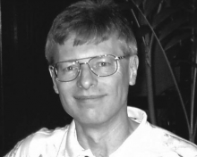

Please note: the AAS Obituaries are temporarily being hosted on this website while their full content is being ingested into the PubPub publishing platform newly adopted by the Bulletin of the American Astronomical Society. When the migration is complete, your existing links will take you to the final, migrated content. Contact peter.williams@aas.org with any questions.
Barry James LaBonte (1950-2005)
Dr. Barry J. LaBonte, age 55, a senior solar physicist in the Space Department of the Johns Hopkins University Applied Physics Laboratory, died on 24 October 2005 in Philadelphia of complications following surgery. He was an internationally recognized expert on solar magnetic fields, the solar cycle, and on the sophisticated instruments needed for studying them.
Barry LaBonte was born in Providence, Rhode Island on 28 April 1950. His parents were Arlene and William LaBonte, and Barry was the oldest of their three children. He excelled early in mathematics and was admitted to the California Institute of Technology, where he earned a BS in economics and a PhD in astronomy. From 1978 to 1981, he did his postdoctoral work at the Mount Wilson Observatory where he and Dr. Robert Howard discovered and analyzed the solar torsional oscillations, which are global flow patterns somewhat analogous to the jet streams of terrestrial weather. They described their findings in a series of thirteen papers in three years. LaBonte and Howard also showed that magnetic fields on the sun are much more dynamic than were previously thought. Contrary to the impression that a few, long-lived sunspots give, the total replacement of the surface magnetic flux occurs within only ten days.
In 1981 Barry became an astronomer at the Institute for Astronomy of the University of Hawaii, where he taught undergraduate and advanced graduate courses and became head of the Mees Solar Observatory. In addition to further work on solar magnetism, he initiated a research program in solar acoustic oscillations, which led to the discovery that sunspots absorb acoustic waves of the global oscillations of the sun. Doug Braun, Tom Duvall, and Barry LaBonte calculated that sunspot magnetic fields, contrary to earlier expectations, absorb enough p-mode energy to alter the spectrum of the global oscillations. It was later shown that sensitive analysis of the oscillations on the face of the sun could detect the presence of sunspots on the invisible side, before they rotate into view. The method, called helioseismic acoustic imaging, has led to much improved two-week predictions of solar activity on the earth-facing side of the sun. While at the University of Hawaii, he guided the work of graduate students and postdocs, and many of his students are among today's outstanding solar researchers.
Barry served the AAS Solar Physics Division variously as a member of the Steering Committee, Nominating Committee, and the Hale Prize Committee. He served the nation on the NSF-NASA-DOE Astronomy and Astrophysics Advisory Committee and the NASA Solar and Heliospheric Physics Management and Operations Working Group.
He worked hard to improve the visibility of heliospheric physics at NASA, where it encountered a very barren stretch in the late 1980s and early 1990s. With the initiation of the "Living With a Star" program in 2000, Barry moved to the East Coast where at the Johns Hopkins University Applied Physics Laboratory (APL) in Laurel, Maryland, he could work more effectively on solar space missions.
Barry felt at home with all aspects of solar physics, and he found excitement in the fact that solar and heliospheric science had an impact on earth and man-made systems. At APL, he worked principally on the interpretation of solar magnetic activity. He also helped to develop the technology of the Solar Bolometric Imager, a unique telescope for precise measurements of the sources of the variations in the sun's radiative output. The torsional oscillations that LaBonte and Howard discovered may be one source of subtle and unexplained variations. Barry also was interested in the flow of magnetic helicity into the corona. He developed a program to automatically compute from near real-time data the amount of helicity entering the corona each day. He used the program to compile helicity data on hundreds of sunspot groups and concluded that there is a threshold accumulation of helicity needed for the occurrence of a large flare. His work always involved fundamental science that could possibly lead to accurate forecasts of solar activity and its effect on geospace. When he died, he was studying the three-dimensional structure of the magnetic fields and electric currents in the solar corona in order to understand the disequilibrium that produces solar eruptions.
I first met Barry when he was a summer intern working with George Simon at the Sacramento Peak Observatory in Sunspot, New Mexico in the early 1970s. Besides working on the solar granulation, Barry learned how to use the Doppler-Zeeman analyzer, the first of the many solar magnetographs that he used to such advantage in his productive career. We had common scientific interests, which led me to follow his career closely, although I was on the East Coast and he was in Hawaii. We had both done our thesis under Hal Zirin and our postdoc with Bob Howard and had haunted many of the same scientific meetings, so I felt I knew him well. At APL he brought a depth of understanding and quick intelligence to our little solar group that lighted up every day.
Barry was more than an imaginative, witty, and productive scientist whose contributions greatly advanced solar physics. He was also a devoted father, rarely taking off from work except to be with his children. Inspired by his daughter Hillary's decision to train for an operatic career, he became an opera buff. He was an avid reader of history, especially military history, and was a member of the Hawaii Bunny Club and the Howard County Hare Raisers. He is survived by his wife, Beatrice Hawkins, and by their three children, Allan, Hillary, and Anna.
Obituary written by: D. M. Rust (John Hopkins University Applied Physics Laboratory)
BAAS Citation: BAAS, 2006, 38, 1277
SAO/NASA ADS Bibcode: 2006BAAS...38.1277R